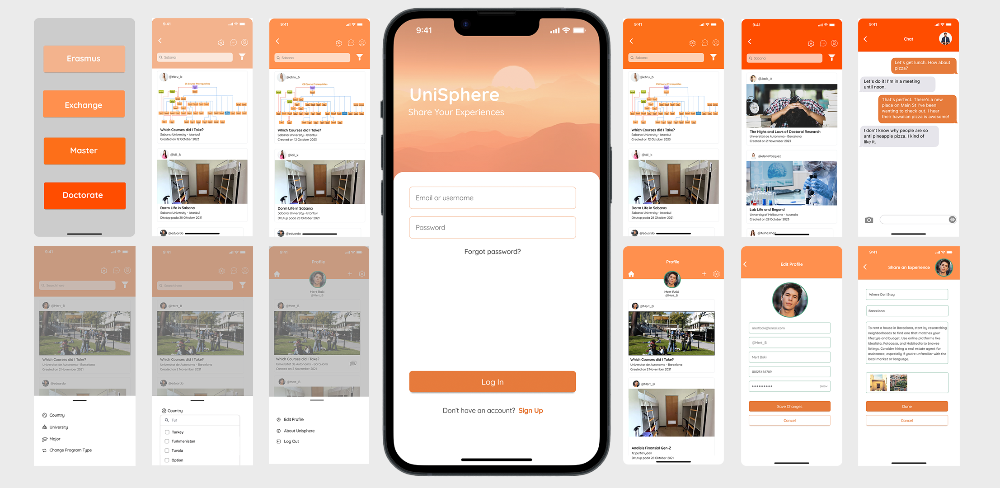

Students moving abroad don't really have one place to connect, ask questions, and learn from people who've been through the same thing.
UniSphere
A mobile app for international students to connect, filter by university and program, and find advice they can actually trust before moving abroad.
We designed a mobile app in Figma where students can filter by university and program and find advice they can actually trust before they relocate.
UniSphere
Mobile App Development & UI/UX Design
Figma
September 2022 - February 2023
1. Project Background
UniSphere is a mobile app I designed with one teammate, built entirely in Figma.
The idea came from something pretty simple: there are tons of social apps out there, but none of them are actually built for students moving to a new city or country for school.
Students who go abroad for:
- Erasmus
- Exchange
- Master's degree
- PhD
often end up struggling to find organized, trustworthy information. Most of the communication happens through random WhatsApp groups, Instagram pages, or forums that you can't search and that aren't centralized anywhere. We wanted to build something focused just for them.
2. Problem & Goals
Problem:
Students moving abroad for school don't have a structured place to connect, ask questions, and learn from people who've done it before.
Goals:
- Build a community where international students can support each other.
- Provide a place to ask practical questions (courses, housing, city life).
- Enable filtering by country, city, university, and major.
- Design a clear, welcoming interface that reduces anxiety for new arrivals.
3. Concept Development
We identified four main user pathways based on purpose:
- Erasmus
- Exchange
- Master
- PhD
Each category became its own section in the app, separated both visually and structurally. Users mostly see content relevant to their own path (a Master's student mostly sees posts from other Master's students), so the feed actually feels relevant instead of generic.
Each section has:
- A unique accent color
- Tailored content emphasis
- A shared design system created in Figma Components for consistency
Short-term programs (Erasmus/Exchange) highlight social life and course choices, while long-term paths (Master/PhD) focus more on research, living arrangements, and career opportunities.

Full Figma Prototype
4. Research & User Needs
We talked informally with students who'd studied abroad to see what they actually needed. Common needs included:
- Reliable housing information
- Course recommendations and reviews
- Connecting with people before arriving
- Guidance on academic workload and expectations
- Emotional support and community
From what we heard, we came up with a few key requirements:
- A global feed filtered by country, university, and major
- Purpose-based user grouping
- Simple, supportive UI accessible to international users
- Screens designed with consistent Figma components and reusable UI patterns
5. Key Features
- Four main sections (Erasmus / Exchange / Master / PhD)
Users start in their own category but can explore others freely. - Advanced filtering
- University
- Country/City
- Department/Major
- Community posts & Q&A
Users ask and answer questions or share tips. - Profiles with purpose & location
Transparency makes interactions more trustworthy. - Figma-based component library
Ensures consistency across icons, typography, colors, and layouts.
6. Visual Design & Color System
The main theme color of Unisphere is orange.
We chose this after testing multiple palettes and reviewing color psychology studies:
- Orange communicates warmth, energy, optimism, and social interaction.
- It helps reduce anxiety and gives users a sense of welcome when adapting to a new environment.
- It visually separates Unisphere from blue-dominant social media platforms.
Each category gets its own accent color that still fits within the shared Figma styles and components.
We prioritized:
- Clean hierarchy for mobile readability
- High contrast for accessibility
- Friendly, minimal design language

7. My Role & Workflow
This was a team project with two designers. My contribution included:
- Co-designing the concept and user structure
- Creating user flows and wireframes in Figma
- Building reusable Figma component sets
- Designing the home feed, filtering interface, and profile screens
- Contributing to the color system and visual direction
- Preparing polished mockups for presentation
Outcome
UniSphere gives students studying abroad an actual structured way to connect, ask questions, and share what they're going through. Between the purpose-specific sections, solid filtering, and a warm visual identity, the goal was simple: cut down the confusion and make a big life transition feel a little less overwhelming.
What this project taught me
UniSphere taught me how much purpose-based navigation can cut down on noise. When people are already feeling overwhelmed, clear structure and a warm color palette do more for them than decorative UI ever could.
If I kept working on this, I'd want to test the flows with students in different countries and tighten up onboarding for first-time arrivals.